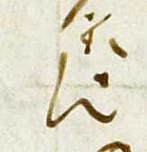

{kind=link}
{kind=link}
{kind=link}
{kind=link}

315
(Editorial team)
(Team A)
Evidence within the Venetus A manuscript suggests that one scribe composed the main text, the main scholia, intermarginal scholia, and interlinear scholia, albeit at different times. When composing the main text, the scribe not only added breathing marks, accents, apostrophes for elision, the titles of each book, among other things, but also composed much of the interlinear scholia. This connection between the main text and many of the interlinear scholia can be deduced from the similarity of both the thickness and color of the pen. What follows are examples of the types of interlinear scholia that were made by the same hand that created the main text. The examples are divided into three different categories: Corrections, Omitted Lines that are then added, and Completed Elisions.
Main Text | Scolio Correction | As Shown on Folio | | --- | --- | --- | | | |  |
Book 8 Line 315 was added at the bottom of folio 106v with the usual sign (a sort of crescent) and the numeral β prefixed, with the numeral α prefixed to Line 314 in the text.
314
315
Main Text | Scolio Correction | As Shown on Folio | | --- | --- | --- | | | | |
Thus these types of interlinear scholia, with very few exceptions (see examples...), appear to have been composed concurrently with the composition with the main text. Once the scribe began work on the main scholia, he did not appear to return to the area dominated by the main text.
(Team C)
(Team D)
(Team E)
(Team F)